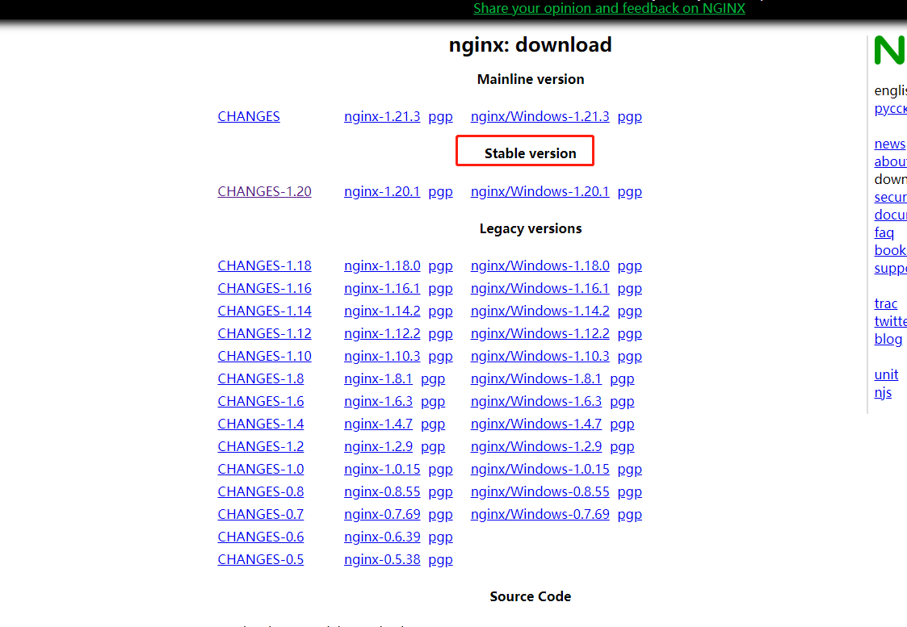

Cent7-nginx安装与配置服务
前言
nginx是一款轻量级、高性能的 Web和 反向代理 服务器，也是一个 IMAP/POP3/SMTP 代理服务器。它常用的主要功能包括：1、反向代理 2、负载均衡 3、HTTP服务器（包含动静分离） 4、正向代理等。在日常的系统开发、测试、部署过程中使用频率较高，因此对nginx安装部署过程进行总结。
服务器环境
网络：内网环境
系统：CentOS Linux release 7.8.2003 (Core)
yum：配置系统镜像源【方案参照】
nginx安装
安装前准备
安装gcc相关编译套件
1
2yum -y install gcc
yum -y install g++必要库：zlib,pcre,openssl
1
yum install -y pcre pcre-devel zlib zlib-devel openssl openssl-devel
nginx下载
nginx版本选择，一般选择stable版本：下载页面
选择下载：
解压
1 | tar -xzvf nginx-2.0.1.tar.gz |
编译
进入目录
1 | cd nginx-2.0.1 |
编译配置
指令解析：
–user=nobody –group=nobody为设置nginx启动的用户以及用户组；
–prefix=/usr/local/nginx为设置nginx默认安装路径；
–with-http_ssl_module配置服务器支持https协议；
–with-http_gzip_static_module为服务器添加gzip压缩支持；
–with-http_stub_status_module为服务器增加状态监控；
–with-http_realip_module为在nginx访问日志中去除代理IP，显示客户的真实IP，一般用户统计客户地域以及通过脚本分析有没有流量攻击；
–with-threads为启用thread pool支持;
–with-stream –with-stream_realip_module –with-stream_ssl_preread_module –with-stream_ssl_module实现端口的转发代理以及负载等；
具体指令：
1 | ./configure \ |
编译
1 | make && make install |
测试
1 | #进入安装目录 |
将nginx加入环境变量
1 | # 建立软连接将：nginx 链接到环境变量目录 |
nginx配置服务以及自启
进入系统服务注册目录
1 | cd /lib/systemd/system/ |
创建nginx.service服务文件
1 | vim nginx.service |
输入nginx.service文件内容：
1
2
3
4
5
6
7
8
9
10
11
12
13
14
15
16
17[Unit]
Description=nginx - high performance web server
Documentation=http://nginx.org/en/docs/
After=network.target remote-fs.target nss-lookup.target
[Service]
Type=forking
# 路径对应安装路径
ExecStartPre=/usr/local/nginx/sbin/nginx -t -c /usr/local/nginx/conf/nginx.conf
ExecStart=/usr/local/nginx/sbin/nginx -c /usr/local/nginx/conf/nginx.conf
ExecReload=/usr/local/nginx/sbin/nginx -s reload
ExecStop=/usr/local/nginx/sbin/nginx -s stop
PrivateTmp=true
[Install]
WantedBy=multi-user.target
刷新systemctl
1 | systemctl daemon-reload |
启动nginx
1 | systemctl start nginx |
配置自启
1 | systemctl enable nginx |
材料参照
本博客所有文章除特别声明外，均采用 CC BY-NC-SA 4.0 许可协议。转载请注明来自 haydenzhou小木屋！
相关推荐

评论